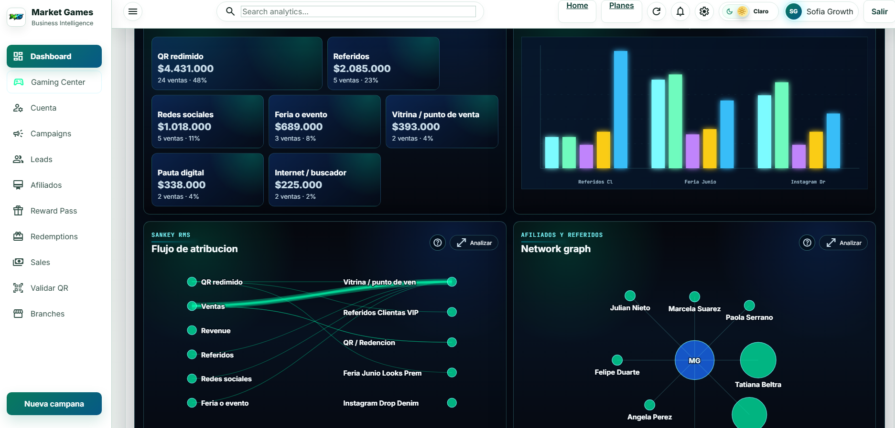
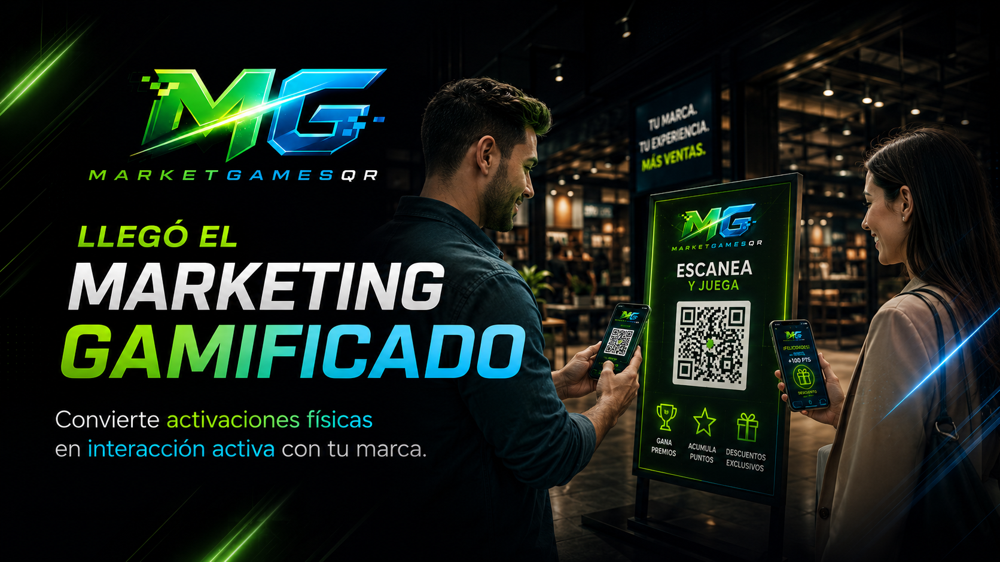
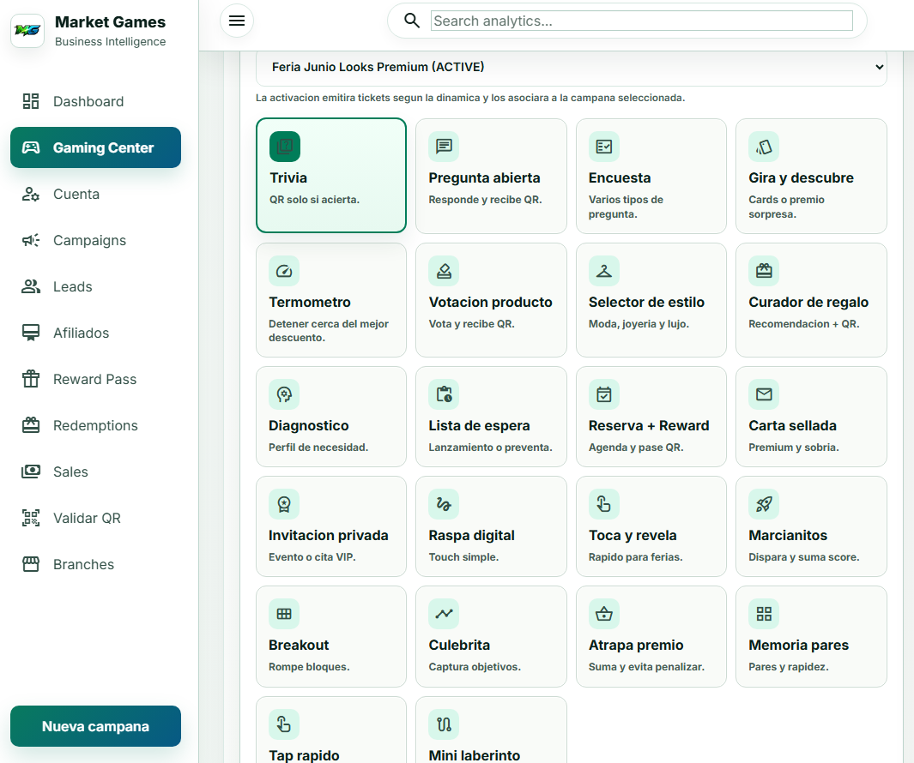
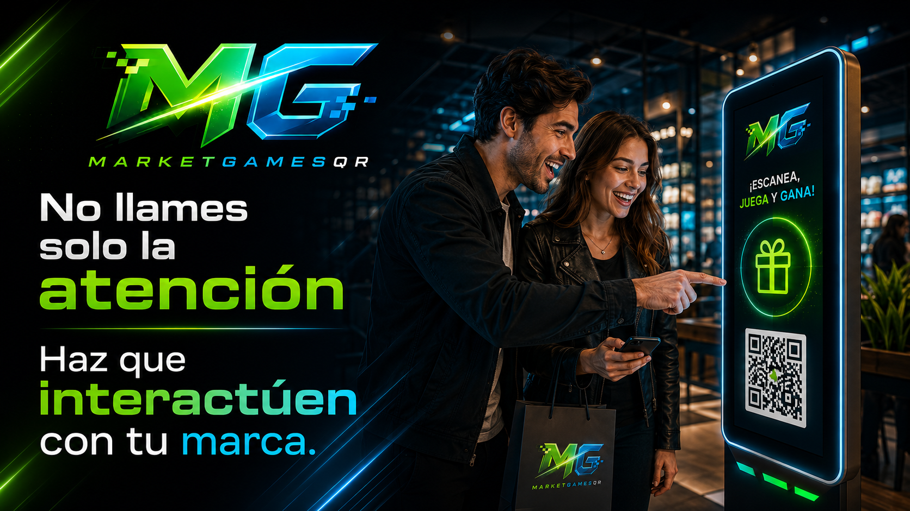
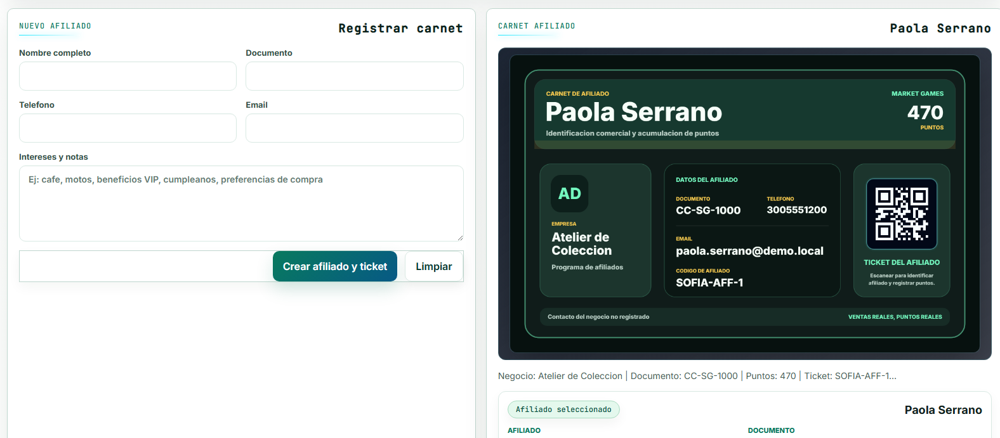

Dashboard RMS
Lectura ejecutiva de gamificaciones, canales y revenue.
Ve qué juego, reto, trivia o QR generó clientes, redenciones, referidos y ventas reales.

Diseña juegos de marca, trivias, ruletas, retos, encuestas, raspas digitales, tickets QR y reward pass. Cada interacción queda conectada con leads, redenciones, referidos, ventas y revenue real.
MarketGamesQR no empieza en un dashboard: empieza en la dinámica que el cliente quiere jugar. El negocio elige una gamificación, conecta un QR, entrega un beneficio y mide qué canal, sede o referido produjo clientes, redenciones y ventas reales.

MarketGamesQR baja el marketing gamificado a la operación: crear juegos, retos, trivias y mecánicas interactivas; emitir QR, validar beneficios, registrar afiliados, comparar campañas y decidir con revenue.

Ve qué juego, reto, trivia o QR generó clientes, redenciones, referidos y ventas reales.

Trivias, giros, retos, raspas y mecánicas rápidas para que el cliente participe, escanee y reclame.

Clientes, vendedores o aliados pueden recomendar y sumar por acciones medibles.
Pregunta abierta, encuesta, raspa digital, selector, toca y revela, juegos rápidos, retos y más.

Tickets QR y Reward Pass con validación, trazabilidad y control de uso.
Redes, pauta, vitrina, feria, empaque, punto de venta, referidos y postventa pueden activar juegos, retos, trivias o beneficios QR. La plataforma mide qué interacción produjo resultado comercial.

MarketGamesQR hace visible la gamificación con videojuegos, QR, premios y medición de revenue. Cada dinámica deja de ser decorativa y se convierte en una experiencia activa que captura atención, registro, redención y ventas atribuibles.


Conoce cómo la plataforma conecta dinámicas interactivas, juegos, QR, redenciones, afiliados, ventas y decisiones comerciales.


El dueño puede pedirle al agente de mercadeo: "diseñemos una gamificación que el cliente quiera jugar y que el RMS pueda medir". Así cada pauta, volante, feria, empaque, influencer, recomendación o activación termina en una pregunta concreta: ¿qué revenue produjo?

Los tickets activan tu portal y funcionan como saldo operativo para generar QR, leads, dinámicas, gamificaciones, redenciones y ventas medibles.
Compra tickets desde T50 como saldo operativo. Desde T200 activas dashboard, Gaming Center, QR, leads, redenciones, Sales Tracker y validador interno sin mensualidad.
Desde T50 Activar Portal BaseGaming Center, dinámicas, juegos, campañas, QR, reward pass, referidos, afiliados, exportaciones y medición comercial.
Starter / Growth / Pro Ver planes10.000+ QR, portal brandeable, alto volumen de afiliados, integraciones, sedes y soporte prioritario.
Por cotización Solicitar cotizaciónCuéntanos si necesitas Portal Base por tickets, Growth/Premium o un plan Global brandeable para activar juegos, dinámicas, QR y medición RMS.
 WhatsApp +57 305 772 4185Revisamos tu estrategia RMS.
WhatsApp +57 305 772 4185Revisamos tu estrategia RMS.